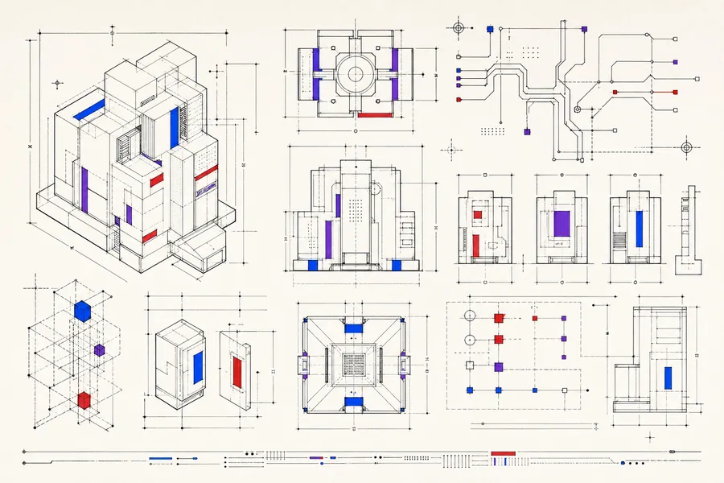

No-code development, blockchain and security work sit awkwardly between disciplines — too technical for a design studio, too small for a specialist firm. This lab documents how we scope, price and deliver all three.

FIG. 00 — capability sheet, revision 2.4
Webflow, Bubble and Framer. We pick the platform on constraints, not preference — and tell you when code is genuinely cheaper.
Smart contracts, mint sites and wallet integration. Audited before deployment, with gas costs modelled up front.
A 12-point audit for small sites and apps. Findings ranked by severity, with fixes quoted separately so you can triage.
They share a failure mode: the sales pitch is easy and the delivery is not. Every one of them is bought by people who cannot easily verify the work.
So we document instead. Platform trade-offs in a matrix. Gas costs before you commit to a chain. Audit findings with severities and point values you can check against any other assessor.
| Bubble at scale | Above ~50k rows we recommend code. Every time. |
| Unaudited contracts | We do not deploy to mainnet without a review pass. |
| Penetration testing | Out of scope. We do basics well and refer the rest. |
| Token economics | Not our discipline. We build, we do not advise on issuance. |